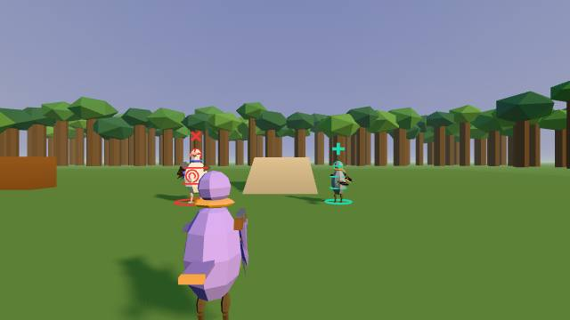
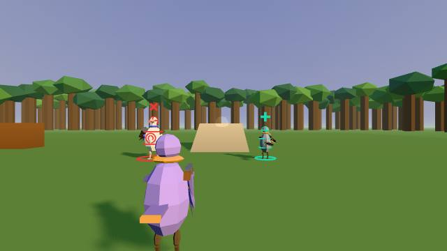
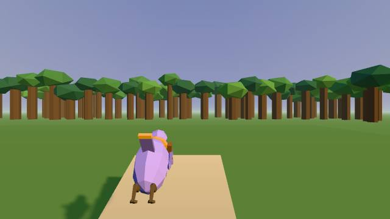

Toucan Playable
Long-range poke · Playable since Stage 4
Appearance: compact black body with a white bib, and a gigantic banana-shaped bill as long as the body, painted green, orange and red with a black tip; blue eye ring. Reads as "small bird behind an enormous rainbow bill".
How to play
Long-range birds win before the fight starts. Chip health from far away, take the high ground, and fall back when an enemy closes the distance.
Toucan fights with the Bill Rifle, which hits instantly. Damage drops off between 35 m and 75 m, and head hits are beak shots worth ×1.65. Every level above 1 is a Molt: +31 max HP per level; +3% gun damage of base per level; +1 Song power per level; +3 melee damage per level.
Abilities
Four abilities. Slots 1 to 3 unlock at level 1, the ultimate at level 6. Each can be upgraded three times, for 1, 2, 5 AP, in order; see Ability Points. The shortest cooldown in the kit is Seed Spit at 9 s.

1. Fruit Lob
Lob a fruit up to 50 m that lands 1.2 s later: 4 m radius, 90 + 0.9 x SP Song damage and a 25% slow for 2 s. Two charges.
- Tier 1 · 1 AP+25 damage (115 + 0.9 x SP) damage +25
- Tier 2 · 2 AP+1 charge (3) +1 charge
- Tier 3 · 5 APLeaves sticky pulp for 4 s: enemies on it are slowed 40%

2. Seed Spit
Spit a seed at 100 m/s up to 60 m: the first enemy hit takes 60 + 0.6 x SP Song damage, is revealed for 6 s and loses 10% Song resist for 6 s.
- Tier 1 · 1 AP+20 m range (80 m) range +20 m, range one +20
- Tier 2 · 2 AP-3 s cooldown cooldown -3 s
- Tier 3 · 5 APThe seed pierces, hitting every enemy in its path range one -80, range all +80

3. Branch Swing
Grapple a point within 25 m and swing to it in a 0.6 s arc.
- Tier 1 · 1 AP-4 s cooldown cooldown -4 s
- Tier 2 · 2 AP+10 m range (35 m) range +10 m, reach +10
- Tier 3 · 5 AP+25% gun damage for 4 s after landing land buff +4
4. Fruit Barrage
Call a barrage on a point within 80 m. After 1.0 s, 12 mortars fall over 3 s at random spots in a 9 m radius: each lands in 3 m for 50 + 0.4 x SP Song damage.
- Tier 1 · 1 AP+4 mortars (16)
- Tier 2 · 2 AP+3 m radius (12 m) radius +3
- Tier 3 · 5 AP-25 s cooldown (75 s) cooldown -25 s
Since Stage 4. See all heroes.